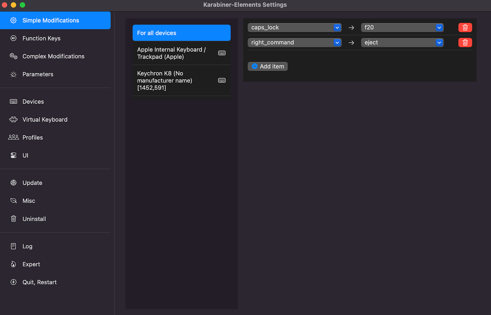
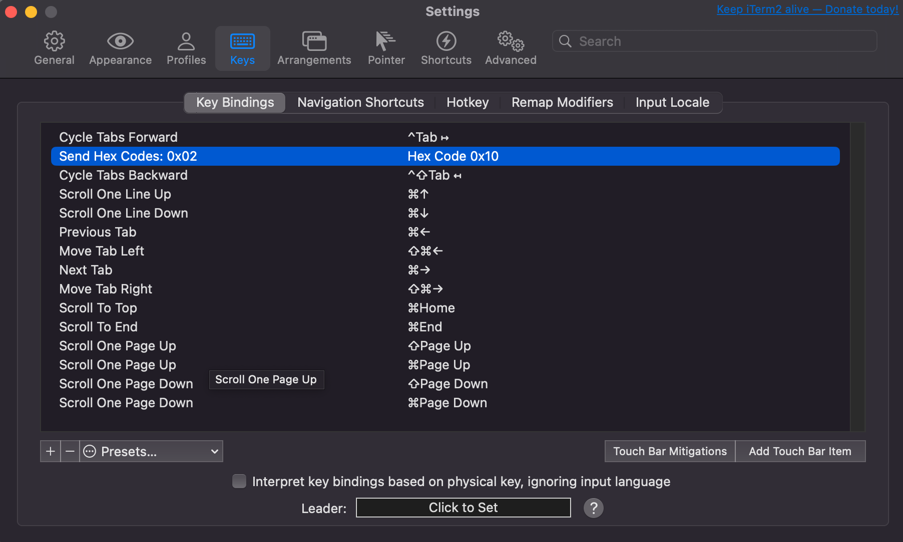

TMux
Installation
Setup all-in-one config

Change separator setting in .tmux.conf.local to use arrow
# status left/right sections separators #tmux_conf_theme_left_separator_main="" #tmux_conf_theme_left_separator_sub="|" #tmux_conf_theme_right_separator_main="" #tmux_conf_theme_right_separator_sub="|" tmux_conf_theme_left_separator_main='\uE0B0' # /!\ you don't need to install Powerline tmux_conf_theme_left_separator_sub='\uE0B1' # you only need fonts patched with tmux_conf_theme_right_separator_main='\uE0B2' # Powerline symbols or the standalone tmux_conf_theme_right_separator_sub='\uE0B3' # PowerlineSymbols.otf font, see README.mdAdd custom key bindings in
user customizationssection in .tmux.conf.localbind-key -T copy-mode-vi 'v' send -X begin-selection bind-key -T copy-mode-vi 'V' send -X select-line bind-key -T copy-mode-vi 'r' send -X rectangle-toggle bind-key -T copy-mode-vi 'y' send -X copy-pipe-and-cancel "reattach-to-user-namespace pbcopy" bind | split-window -h bind - split-window -v bind p previous-window # select previous window bind n next-window # select next window unbind '"' unbind %Install nerd-fonts if symbols are not showing properly
Use Caps Lock key to send TMux prefix
Go to
System Settings->Keyboard->Keyboard ShortcutsIn
Modifier Keystab, setCaps LockKey toNo ActionRemap
Caps Lockkey to function keyF20(captured as hex code 0x10) using Karabiner
Open iTerm2
Setting->Keys, in theKey Bindingstab, add a mapping fromHex Code 0x10toSend Hex Codes: 0x02
Vim
Install runtime path manager Pathogen
Install vim-sensible
Install vim-colors-solarized
Install vim-go
Update
.vimrc
execute pathogen#infect()
" last position
if has("autocmd")
au BufReadPost * if line("'\"") > 0 && line("'\"") <= line("$") | exe "normal! g`\"" | endif
endif
set re=0
" solarized color
syntax enable
set background=dark
let g:solarized_termcolors=256
colorscheme solarized
autocmd BufWritePre *.* :%s/\s\+$//e
"python
"let g:python3_host_prog="/usr/local/bin/python3"
"let g:autoformat_verbosemode=1
"au BufWrite *.py :Autoformat
"golang
autocmd FileType go noremap tl :GoDef<CR>
autocmd FileType go noremap th <C-o>
autocmd FileType go noremap tk :GoDoc<CR>
autocmd FileType go noremap <leader>b :GoBuild<CR>
autocmd FileType go noremap <leader>r :GoRun<CR>
autocmd FileType go noremap <C-k><C-k> <C-x><C-p>
let g:go_gopls_enabled = 1
let g:go_gopls_options = ['-remote=auto']
let g:go_def_mode='gopls'
let g:go_info_mode='gopls'
let g:go_referrers_mode = 'gopls'
"let g:go_def_mode='guru'
"let g:go_gocode_propose_source=0
let g:go_code_completion_enabled = 1
let g:go_metalinter_enabled = []
"let g:go_metalinter_command = 'golangci-lint'
"let g:go_metalinter_command = 'golint'
let g:go_metalinter_autosave = 1
"let g:go_metalinter_autosave_enabled = ['vet','revive','errcheck','staticcheck','unused','varcheck']
let g:go_metalinter_autosave_enabled = []
let g:go_rename_command = 'gopls'
filetype plugin indent on
set hlsearch
set nu
set cursorline
set paste
" show existing tab with 4 spaces width
set tabstop=4
" " when indenting with '>', use 4 spaces width
set shiftwidth=4
" " On pressing tab, insert 4 spaces
set expandtab
set viminfo='20,<1000
.ssh
It is ok to copy over .ssh folders with existing private and public keys